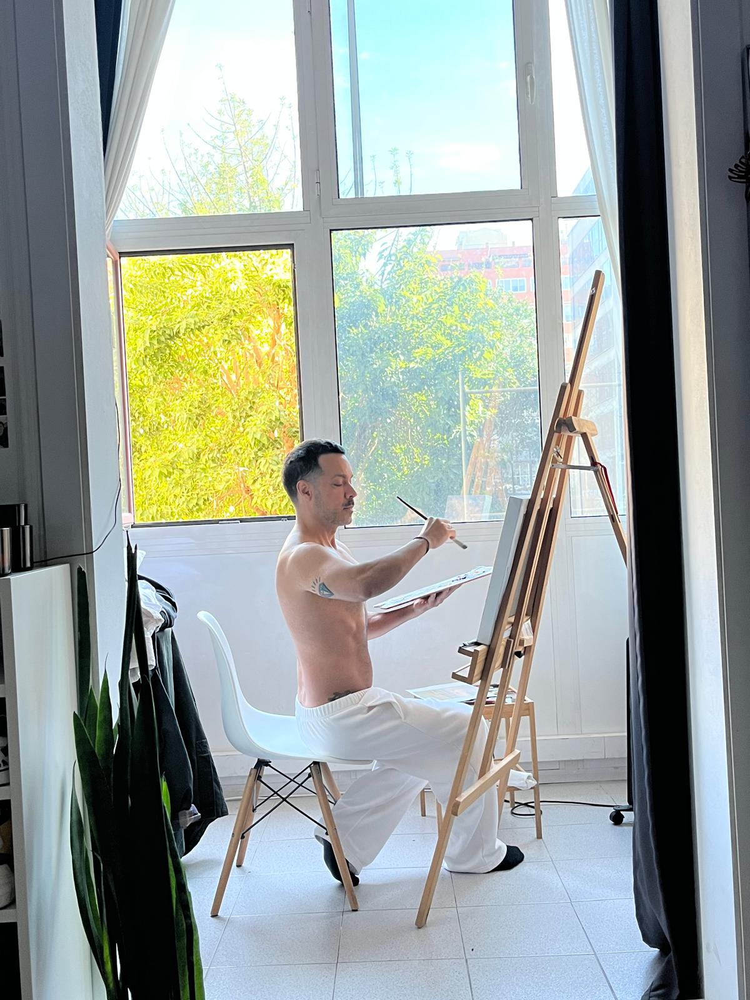

André Bazaga
ES
EN
PT
FR
André Bazaga
↓
Casita blanca
60 × 80 cm · 2026

El Cupido
· 92 × 73 cm · 2024
Me quita el aire
· 92 × 73 cm · 2024
Edén
· 60 × 60 cm · 2026
Edén II
· 60 × 60 cm · 2026
Mediterráneo
· 80 × 60 cm · 2026
The Munchies
· 40 × 40 cm · 2026
→
info@andrebazaga.com